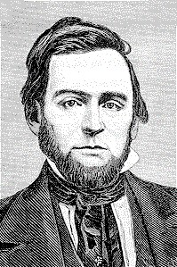

%20%20Joseph%20Barnby.png)


Today??s congregational singing scene in many Protestant churches is a far cry from what it had been a couple hundred years ago. Aside from the simplicity with which their song servece were carried on, their hymnals then were also very different in that it did not contain written notes. At best, it contained words, with a few indications of a metric index ?X a system that helped them quickly match the verses with a particular tune. Today, churches have fancy hard bound hymnals with notes in 4-part voices, and a companion book to supplement the hymnals in case more information is needed about the hymns.
The Noteless Hymnal Dilemma
The early Seventh-day Adventist church was not exempt from the former scenario. The early hymnals compiled by James White was a perfect illustration of such noteless hymnbooks that abounded during the 1800s. Adding to this dilemma was the fact that the new church had very few members scattered all over the northeastern United States. A worship service is usually held at home, and would only be spent with other members when a minister is passing through.

The worship service then did not boost the wonderful instruments we enjoy today such as the guitar, piano, organ, and in some, a church orchestra. Most of the singing was done in acapella ?X without reference to any written notes.
Hymns were taught using a method popularly called ??lining out.?? A confident singer sings portions of the hymn to which the congregation will echo at the appropriate time. This type of rote singing was the only way to make the musically illiterate congregation learn the new hymns. If a congregation meets once a week, then they learn the hymns quicker and with much success. But it was not so with early Adventists.
Joseph Clarke perfectly described this scenario in The Advent Review and Sabbath Herald, November 10, 1859

In other words, the singing was messed up. With no instrument to guide and lead, and without regular meetings that would??ve strengthened their singing ?X the congregation was left to sing the unfamiliar hymns in varying tempos, rhythms and melodies.
One solution to the problem was to sing the religious words and sing them to the secular tunes of the day. In fact, this was not a strange idea at all because the early reformers precisely did the same thing for their congregations. This idea is an old compositional technique called ??contrafacta?? and was highly practiced by Martin Luther when he wanted to promulgate his teachings on righteousness by faith. And it worked, especially because the secular and sacred music did not really sound so different from each other. The people can sing the religious lyrics while singing it to the very popular tunes that are already familiar to them.
Related Posts
Martin Luther: The Man of the Hour
Without This, Music Is Nothing
??O Brother Be Faithful,?? by Uriah Smith is an example of a hymn that uses contrafacta. The original text, ??Be Kind to the Loved Ones at Home?? was written by Alonzo J. Abbey, with the tune written by Isaac Woodbury. It was intended to be a secular song that talked about respecting and loving family members.
Here??s me basically saying almost the same thing I??ve written here, but watch till the end if you want to hear me play a piano arrangement of this hymn.
[embedyt] https://www.youtube.com/watch?v=akvLJaq_FPw[/embedyt]
THE ORIGINS OF ??O BROTHER BE FAITHFUL??
Not much is known about A.J. Abbey except that he was the son of David and Nancy Farnham Abbey, and brother to Horatio G. Abbey. He taught music for several years, and was also a music publisher. ??Be Kind to Loved Ones?? was considered to be lyrics for a secular tune, but included in a hymnal for the words reflected Christian virtues. It os found in the Linden Harp: a rare collection of popular melodies adapted to sacred and moral songs, original and selected.

A tune was composed using these same exact words, but later on, composer, music teacher and editor, Isaac Woodbury would retune it to a more singable tune.
As a boy, Woodbury studied music in nearby Boston, then spent his nineteenth year in further study in London and Paris.

He taught for six years in Boston, traveling throughout New England with the Bay State Glee Club. He later lived at Bellow Falls, Vermont, where he organized the New Hampshire and Vermont Musical Association. In 1849 he settled in New York City where he directed the music at the Rutgers Street Church until ill-health caused him to resign in 1851. He became editor of the New York Musical Review and made another trip to Europe in 1852 to collect material for the magazine. In the fall of 1858 his health broke down from overwork and he went south hoping to regain his strength, but died three days after reaching Columbia, South Carolina.
He published a number of tune-books, of which the Dulcimer, of New York Collection of Sacred Music, went through a number of editions. His Elements of Musical Composition, 1844, was later issued as the Self-instructor in Musical Composition. He also assisted in the compilation of the Methodist Hymn Book of 1857.
He would be known in American history who highly promoted singing in schools ?X a movement that Lowell Mason and many others lobbied.
He also popularized Abbey??s ??Be Kind To Thy Loved Ones At Home?? by composing a tune for it which he arranged as a vocal piece.
Later on this song reached another transformation at the hands of one of Seventh-day Adventists formidable figures ?X Uriah Smith.


URIAH SMITH: THE ONE-LEGGED GENIUS
Uriah Smith evidently came across this popularized version of Woodbury for he used it to be the tune for his well-known hymn ??O Brother Be Faithful??.
The youngest of four children, Smith is brother to poet and hymn writer Annie Smith. At a young age, about 12 or 13, he suffered from an illness caused by calomel overdose. This resulted into his left leg becoming sore which became so aggravated that amputation became necessary. His leg was cut just right above the knee.

It was also around this time that Smith began to believe in the nearness of the coming of Christ. His parents were devout Christians and was one of the thousands who believed that Christ will come on October 22, 1844.
When that did not happen, he devoted himself to securing the highest education possible. He was accepted in the Phillips Exeter Academy, one of the most prestigious school during his time. He also had plans to attend Harvard College shortly after graduating from the Academy.
Apparently, the Lord had different plans for him. Around 1852, he attended the conference of Adventists at Washington, New Hampshire. Here he heard for the first time the reason for the disappoinment as well as the Sabbath truth. He struggled with these messages for about three months, knowing that upon acceptance of these truths meant giving up his cherished hopes and dreams.
He finally accepted the truth and resolved to throw his talent and energy into the movement, the same way he planned to for his education.
He did throw all his energy and talents for the cause. Smith is considered to be one of the giants in Adventism who became one of the chief editors of the Review and Herald, secretary of the General Conference of Adventists for five periods (about 21 years), and also served as the conference??s treasurer at one point.
Not only did he served in these positions but he was also known as an inventor. He has several inventions to his name, as well as patents, through which he was able to generate alot of money.
One of his inventions was a jointed prosthesis that allowed him to walk about without anyone ever thinking he was missing a leg. He also patented a seat and desk that would let the seat fold up from the rear instead of the front. This he sold to the Union School Furniture Company which enabled to fund the needs of the Seventh-day Adventist movement.
Lineage made an awesome short documentary about Uriah Smith. Click the image below to watch.